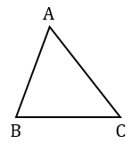

Треугольником называется фигура, которая состоит из трех точек, не лежащих на одной прямой, и трех отрезков соединяющих эти точки. Точки называются вершинами треугольника, а отрезки - сторонами.

Углом треугольника △АВС при вершине А называется угол, образованный полупрямыми АВ и АС. Также определяются углы при вершинах В и С. Треугольник обозначается указанием его вершин.